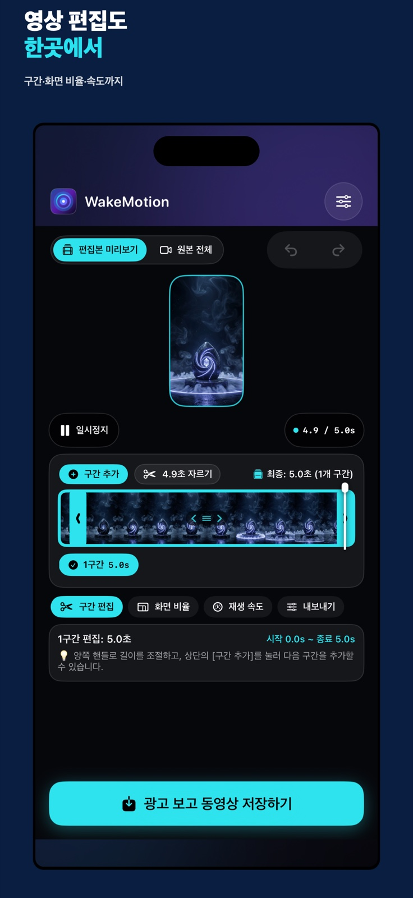

대표 장면과 움직임을 한 화면에서
1–2초 구간, 대표 사진, 색감, 스티커와 화면 구성을 미리 보며 조절합니다.
VIDEO TO LIVE PHOTO
직접 고른 영상에서 가장 좋은 1–2초를 골라 Live Photo로 만들고, iPhone 잠금 화면에 간직하세요.
iPhone 전용 · 무료(광고 포함) · Live Photo 결과는 무음


기기 안에서 처리선택한 영상을 서버에 올리지 않아요.
원하는 순간만구간과 대표 사진을 직접 골라요.
잠금 화면까지저장 후 설정 방법도 안내해요.
MADE FOR YOUR MOMENT
미리보기와 저장 결과를 같은 기준으로 보여주고, 필요한 도구만 단계별로 꺼내 쓸 수 있습니다.
1–2초 구간, 대표 사진, 색감, 스티커와 화면 구성을 미리 보며 조절합니다.
앱에 포함된 AI 제작 추천 샘플로 먼저 경험하고, 내 영상으로 이어서 만들 수 있습니다.
Video Studio에서 자르기, 화면 비율, 재생 속도와 원본 소리 유지·음소거를 선택해 MP4로 저장합니다.

ONE APP, TWO FLOWS
Live Photo 제작과 Video Studio는 분리되어 있습니다. 목적에 맞는 흐름을 고르고, 완성 파일은 사진 보관함에 직접 저장하세요.
HOW IT WORKS
첫 실행 때 WakeMotion 화면에서 안내용 Live Photo를 한 번 촬영합니다. Apple 카메라 앱의 LIVE 설정은 바꾸지 않아도 됩니다.
추천 모션 또는 사진 보관함의 내 영상을 선택합니다.
움직일 구간과 대표 사진을 고르고 필요한 스타일을 적용합니다.
사진 앱에서 LIVE 재생을 확인한 뒤 새 잠금 화면으로 설정합니다.
GOOD TO KNOW
아니요. 첫 맞춤 촬영의 Live Photo 기능은 WakeMotion이 해당 화면에서 직접 켭니다. 실패하면 카메라·마이크 권한과 다른 카메라 앱 사용 여부를 확인해 주세요.
WakeMotion의 영상 선택과 변환은 iPhone 안에서 처리됩니다. 사용자 미디어를 보관하는 자체 계정이나 백엔드를 운영하지 않습니다.
앱 설정의 잠금 화면 호환성을 한 단계 높여 다시 만들어 보세요. iOS와 원본 영상 특성에 따라 결과가 달라질 수 있습니다.
WAKE YOUR MOMENT
WakeMotion을 무료로 시작해 보세요.